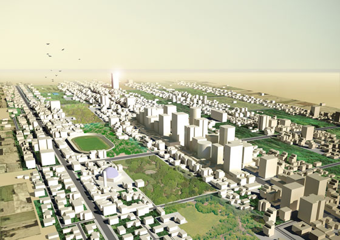
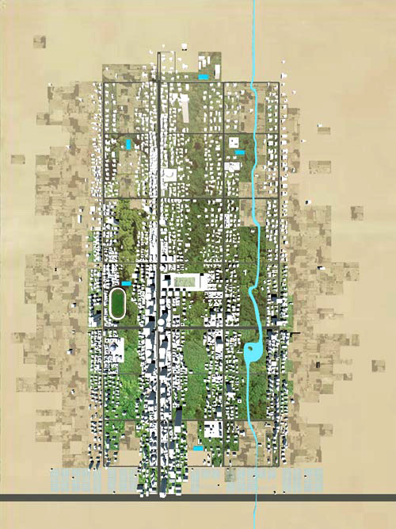
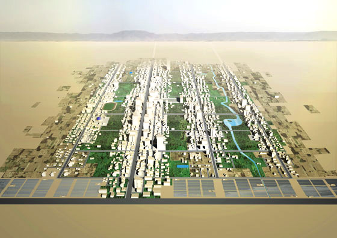

Unan City
Thita Group
Comission - Urban Plan - Kurdistan - 2011

The City
In the absence of context, flexibility is a indispensable quality. UNAN City starts as a module of 1.5km
by 2.4km, designed to accomodate a population of 12.000 inhabitants. Through phased implementation,
the qualities of the plan will be active from the very start, and strengthened with time. The system has both the capacity to expand on it's own, and to connect with or absorb existing settlements.

The city module is divided into a series of strips, each articulated by a main circulation path. The different functions of the city are distributed along strips in a variety of building typologies, each
strip with a distinctive character and quality for the city: culture/leisure/recreation, mixed use city centre,
education, suburban. The buildings are distributed with varying densities to imbue different urban
qualities. Between each strip is open park and recreation space. The strips form a collection of skylines
which alternate with the open space offering densified sustainable urban condition with the continuous
experience of nature.
To fully achieve a vibrant urban environment, the program introduces a large range of activities and
uses that complement the residential program. The built density achieves its peak along the main artery,
that links Unan City with the rest of the region. From here outwards, the concentration of buildings
diminishes, until the outer edges aquire the quality of suburban neighbourhoods. The perimeter green
belt offers farmland and energy farms offering the city with an accessible supply of fresh goods and
power.

Team: Thita Group - FORA (João Moura Fagulha, Raquel Maria Oliveira, João Prates Ruivo), Beth Hughes, Alexandros Gerousis, Matina Theodoropoulou. Client: Private